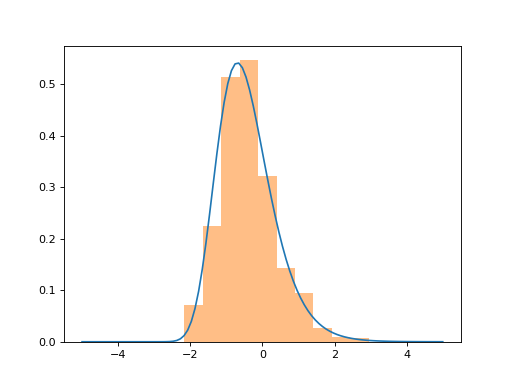

pydygp.probabilitydistributions.InverseGamma¶
-
class
pydygp.probabilitydistributions.InverseGamma(a=1, b=1)[source]¶ -
__init__(a=1, b=1)[source]¶ Inverse Gamma probability distribution
Notes
The probability density for the Inverse Gamma distribution is
\[p(x) = \frac{\beta^{\alpha}}{\Gamma(\alpha)} x^{-(\alpha+1)} e^{-\beta x^{-1}}\]where \(\alpha\) is the shape parameter and \(\beta\) is the scale parameter.
Examples
>>> # compare with the gamma distribution in scipy.stats >>> from scipy.stats import gamma >>> p = InverseGamma() >>> q = p.logtransform() # dist. of log transformed inv. gamma r.v. >>> z = gamma.rvs(a=2, size=1000) >>> x = np.linspace(-5., 5., 100) >>> # plot the pdf of the log transformed inv. gamma r.v. >>> plt.plot(x, np.exp(q.logpdf(x))) >>> # plot the histogram of log(1/Z) Z ~ gamma(a, b) >>> plt.hist(-np.log(z), density=True, alpha=0.5)
(Source code, png, hires.png, pdf)

-
logtransform()¶ Distribution of the log-transformed random variable.
Returns: - prob_dist : ProbabilityDistribution
The distribution of the log-transformed random variable represented as a UnivariateProbabilityDistribution object.
-
{kind=link}
{kind=link}